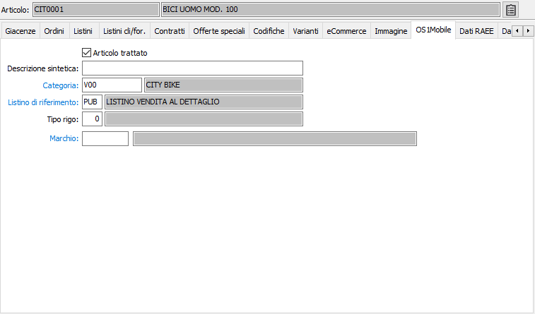

OS1Mobile
La sezione video è attiva solo in presenza del modulo "OS1Mobile".
Gli articoli da esportare nel database dei dispositivi remoti dovranno essere impostati come Articolo trattato spuntando la relativa casella; è possibile inoltre impostare una descrizione sintetica. La CATEGORIA viene utilizzata per la ricerca sul dispositivo (ad albero), se l'articolo fa parte di un raggruppamento deve essere indicata nella categoria di riferimento la categoria di appartenenza, relativa alla tabella Categorie di OS1Mobile, altrimenti la categoria di riferimento deve essere lasciata vuota. Il LISTINO DI RIFERIMENTO identifica il listino di riferimento per ottenere il prezzo base del prodotto; sia sul campo categoria che sul campo listino di riferimento sono attive le funzioni di ricerca (F9) e manutenzione (CTRL+W) sulla relative tabelle.
Il TIPO RIGO è utilizzato, associato al prodotto, per la generazione del relativo rigo documento sul dispositivo.
Inoltre nella linguetta delle Immagini sono stati inseriti due nuovi pulsanti, uno per generare l’immagine associata all’articolo nei formati impostati nei Tipi immagine ed un altro per vederne l’anteprima.
